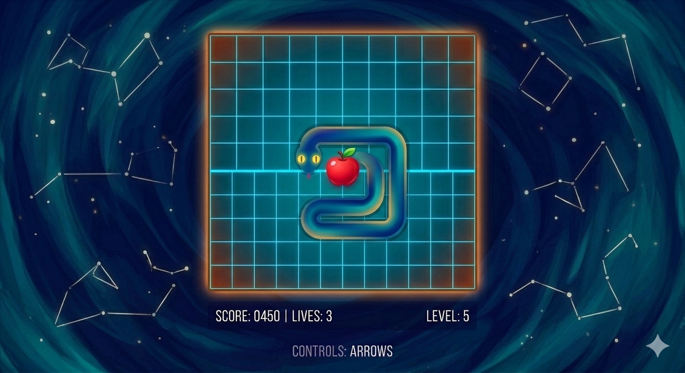

Featured Projects
Live Currency Converter
I developed a script querying live APIs for real-time currency conversions and also implemented error handling for poor network, invalid codes, and API rate-limits, improving reliability for end users.
Python CLI / API
Number Guessing Game
I built an interactive logic game in Python that generates a random target number and guides users with dynamic feedback. Implemented robust data validation and exception handling to manage invalid inputs cleanly.
Python CLI / LogicBank Account Simulator
I developed an Object-Oriented bank account simulation script in Python to model real-world financial transactions. The application securely manages user states, calculates real-time balances, and tracks transaction histories across multiple operations like deposits, withdrawals, and balance inquiries while enforcing strict validation rules to prevent overdrafts and negative inputs.
Python / OOP LogicTyping Speed Test
I built a terminal-based performance utility in Python that tracks user input metrics. The script calculates dynamic Words Per Minute (WPM) and implements string-matching logic to evaluate and display absolute error counts and overall percentage accuracy.
Python / Metrics & Logic
Python Snake Game
I developed a classic 2D Snake game in Python utilizing graphical libraries to implement real-time event listening and grid-based movement tracking. The application features dynamic coordinate updates for the snake's body segments, algorithmic collision detection for canvas boundaries and self-intersection, and a randomized coordinate generation system for food placement.
Python / GUI & Logic